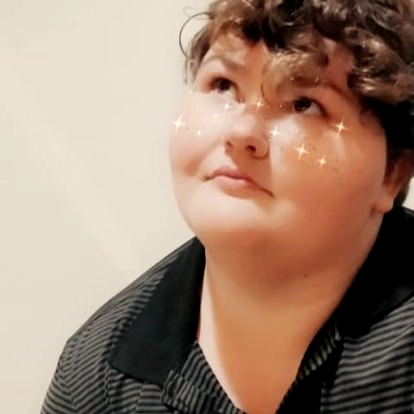

Immediately After
After Coding temple, I want to find a fulfilling job, preferably remote. I want a job that means something beyond a tech support or customer service role. My dream job will be assisting with an app or website in an industry I care about.
My Long Term Goals
I've always dreamed about owning my own business. I've had several ideas for apps I want to make. I might not ever be a successful CEO of a tech company, but that's not really what I want. I just want to put out work that I'm proud of, and that I can live off of without pressure of bills. I don't see programming or any tech field as a get rich quick type of deal. I just think that it would be wonderful to have a career that will last a while and that I can actually be happy in.
